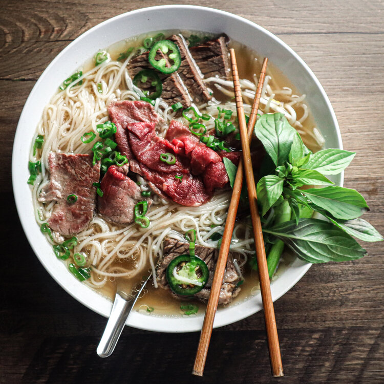

Pho

Description
Pho is a Vietnamese soup consisting of bone broth, rice noodles, and thinly sliced beef
INGREDIENTS
- Pho noodles
- Onions
- Ginger
- Star anise
- Beef brisket
- Beef Bones
- Cilantro
INSTRUCTION
- For the broth: Place the beef bones in a stockpot and cover with cold water. Turn the heat on high, and once the water comes to a boil, blanch for an additional 10 minutes, or until the bones have a clean, neutral smell when pulled from the boiling water. Drain the bones and allow to cool.
- Preheat broiler to high. Cut both the onion and ginger in half, leaving the skins on, and rub them on all sides with vegetable oil. Place them both on a sheet pan and broil on the second-highest oven rack, flipping occasionally until both sides of the vegetables are deeply charred, about 15-20 minutes. You may have to remove the onions earlier since they tend to sit closer to the heating element and are more prone to burning.
- When the bones are cool enough to handle, rinse them under cold water, scrubbing off any impurities or clots of blood to ensure a clear broth. Wrap the cinnamon, star anise, fennel, coriander, and cloves in a piece of cheesecloth and tie into a bundle with butchers’ twine. Place the bones in a clean pot, along with the spice bag, and charred pieces of onion and ginger. Season with the salt, sugar, and msg. (If you’re not using the msg, you may have to adjust with more salt and/or compensate with a few dashes of fish sauce.) Cover with 3.5 liters (1 gallon) of water and bring to a boil. Reduce the heat to low and simmer uncovered for six hours. Taste and adjust for more salt or sugar before straining the stock. Reserve until you’re ready to serve.
- To assemble: Place the rice noodles in a large bowl, and cover with hot tap water. Let soak for fifteen minutes until pliable, then drain. At this point they can be kept in the fridge until ready to use.
- Bring a pot of water to a boil. Meanwhile, toss together the sliced white onion, chopped culantro, and sliced green scallions.
- Blanch the soaked rice noodles for about 30-45 seconds but no longer. Divide the noodles between the bowls along with the thinly sliced steak, halved meatballs and onion and herb mixture. Bring the broth back up to a rolling boil and pour over the noodles and beef. Serve with a platter of the classic accoutrements.